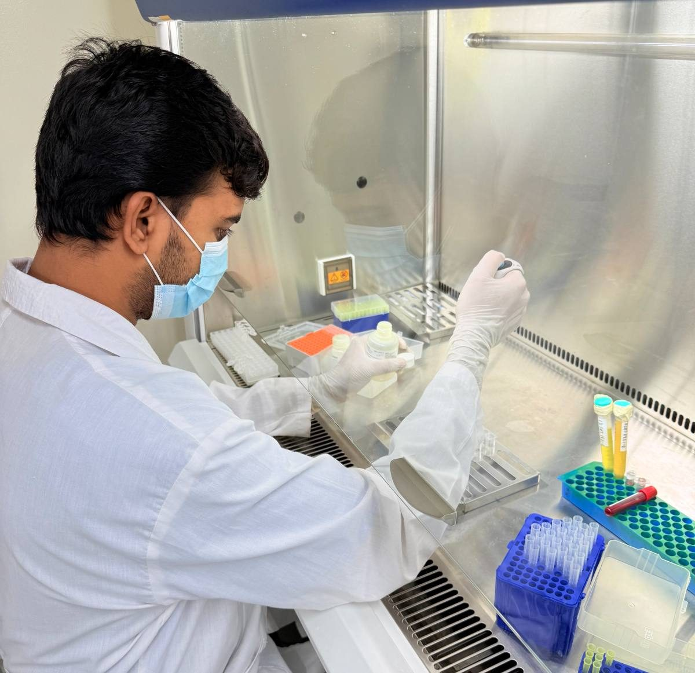
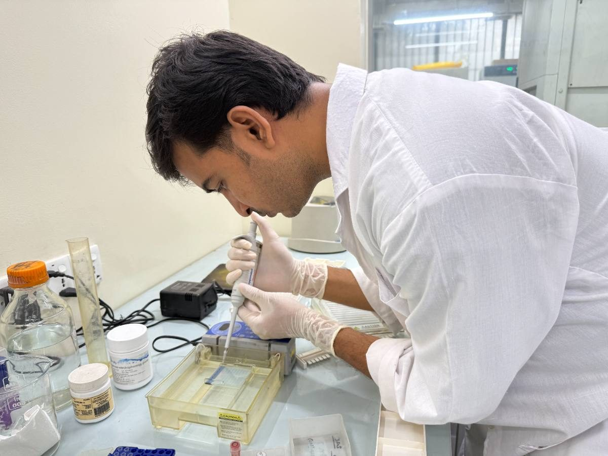
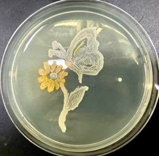

Field & laboratory
Moments from research practice.
Fieldwork, lab work, training, and the people behind the research.





Field & laboratory
Fieldwork, lab work, training, and the people behind the research.


